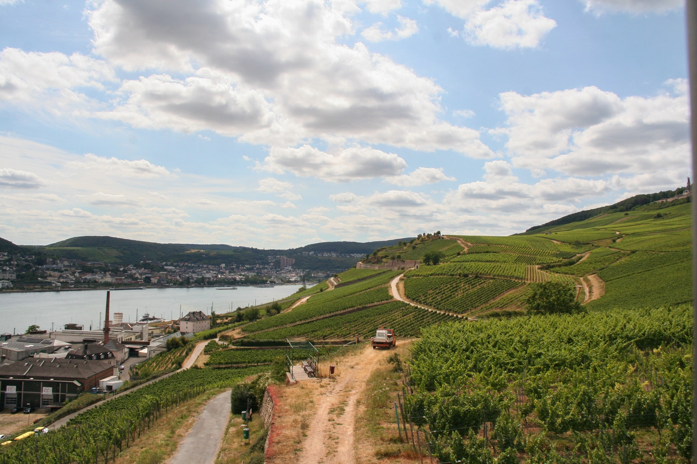

This website contains pictures of places where I have been. Some I have lived in, others I have visited. The images are not in any order, but they represent the journey. Some of the pictures are mine and others are borrowed.
The top picture was once my grandfather's farm, it now belongs to an uncle. We go there for family get togethers or just a relaxing weekend. The next picture is a sign for Carnaby Street in London. It is a side street off of Oxford Circus and at the time that I lived there, it was a hippie type place to go to for music, posters, clothes, etc. I think it would be fun to go visit.
The scene from the mountain Wank, is over looking the town Garmisch-Partenkirchen, Bavaria, Germany. It was a short walk from where we lived for many years. I, too, stood where the photographer stood and looked out on the town. The mountain to the left is where my children learned ski, twenty plus years after me.
I lived in Iceland as a child and was able to see and experience many wonderful things there. It was a warm, sunny, summer day as I stood in front of a geyser just like the one pictured. The water was so warm. It was as amazing experience.
Along the Rhine River in Germany are many vineyards. Some of the towns, and even the mountains look as if they just drop into the river. The town in this picture is near whre we lived for a few years, just a twenty minute drive down the mountain.
Home